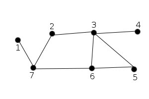
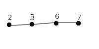

Este algoritmo sólo se puede aplicar a grafos no dirigidos y sin bucles.
NOTA: Recordemos que un bucle es una arista en la que los dos extremos coinciden.
Sea G=(V,E) grafo no dirigido llamamos:
Emparejamiento: subconjunto de E, M, en el que no hay dos aristas que sean adyacentes y ninguna es un bucle.
Vértice M-saturado: vértice que posee una arista de M incidente en él. En caso contrario se dice que el vértice es M-insaturado.
Emparejamiento máximo: emparejamiento tal que no existe ningún otro emparejamiento con mayor número de aristas.
Emparejamiento perfecto: emparejamiento en el que todos los vértices son M-saturados.
Ejemplo:

Sea G el grafo de la figura:
M1 = {(2,3), (6,7)} es un emparejamiento.
Los vértices 2,3,6,7 son M1-saturados, los restantes son M1-insaturados.
M1 no es máximo ya que M2 = {(1,7), (5,6), (2,3)} es también emparejamiento y |M1| < |M2|.
M2 es máximo puesto que |V| = 7 y |M2| = 3 pero no es perfecto, porque el número de vértices es impar y por lo tanto siempre habrá un vértice M-insaturado.
En muchas ocasiones, dado un grafo no dirigido ponderado G=(V,E), es interesante conocer no sólo un emparejamiento máximo o perfecto si existe, sino de estos el que más pese, entendiendo por peso del emparejamiento la suma de los pesos de las aristas que lo forman. Por ello introducimos los siguientes conceptos.
Sea G=(V,E) grafo no dirigido y M emparejamiento en G. Llamamos:
Emparejamiento máximo de máximo peso: todo emparejamiento máximo de G tal que el peso de cualquier otro emparejamiento M1 sea menor o igual que el de M. En caso de que el emparejamiento máximo de máximo peso sea además perfecto, se llama emparejamiento óptimo.
Camino M-alternado: camino en G cuyas aristas pertenecen alternativamente a M y E-M.
Camino M-incrementable: camino M-alternado en G cuyos extremos son M-insaturados.
Ejemplo: En el grafo anterior

Es M1-alternado. No es M1-incrementable.
El algoritmo de Edmonds 2 obtiene un acoplamiento (emparejamiento) de máxima cardinalidad y peso máximo o mínimo en el grafo dado.
Durante su ejecución se emplean distintas estructuras del contexto de la Teoría de Grafos, como son el subgrafo igualdad y el árbol alternado.
En esta aplicación los arboles alternados emplean la siguiente representación:
Maximizar - Minimizar: Permite elegir que emparejamiento (acoplamiento) se buscará, el de máximo peso o el de mínimo peso; esta opción se aplica al iniciar el algoritmo, por lo que cualquier modificación durante el trascurso del mismo no tendrá ningún valor.